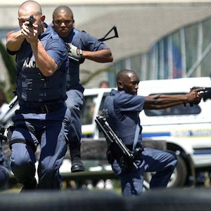

Role of Police in Born A Crime

Some of the police were to go around peeking through windows to see if they could catch anyone
breaking the law. If an interracial couple got caught, they would kick down the door, drag the people
out, beat them and arrest them. But they would only do that to the black person. The police would
always favor the white person and let them go scot-free while the African would pay the
price.
Trevor describes South Africa as a police state. He defined it by saying that in the state, everyone thinks
everyone else is the police.The police had recruited some people, in this case he specified that it was
black people, who were acting as spies to aid the police in catching the law breakers.
He goes on to say that even when they were walking in the street with his mother, she would have to
drop him as soon as the police came because they lived in an area that was highly populated by
Europeans and they wouldn't have believed that she was his mother.